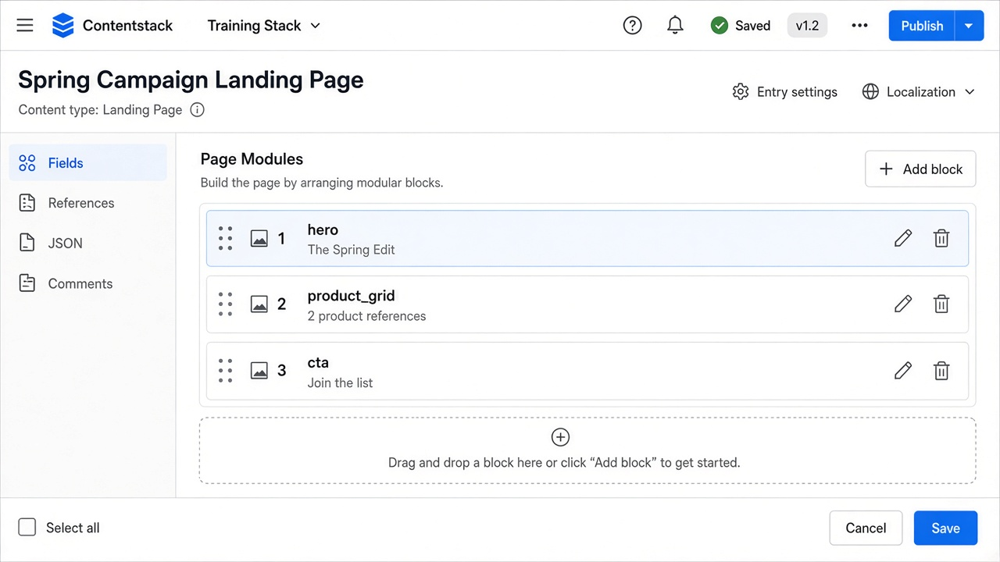

Real project QA issues — components and templates
Time: 90 minutes to read · use on every template UAT
Goal: Recognize the defects that actually ship when a Contentstack page is built from content types + modular blocks + a frontend template.
On a real project, “component” usually means a modular block or a referenced entry (hero, product card, CTA, quote). “Template” means the frontend page type that maps those fields (homepage, PDP, article, landing page, listing). QA must test the pair, not only the CMS form.
Content type / modular block (schema)
↓
Entry published to env + locale
↓
CDA / GraphQL JSON (includes, embeds, assets)
↓
Frontend template / React componentIf any arrow is wrong, the page looks “randomly broken.” File the issue with a layer and a CDA snippet, not only a screenshot.

---
How to UAT a new template (do this first)
- Open the content type. List every field UID the template claims to render.
- Create or use a
[QA-FIXTURE]entry with every optional block filled once, and a second entry with minimum required fields only. - Publish staging only. Confirm production CDA does not have the fixture.
- GET the entry with the same
include[]/include_embedded_items[]the app uses. - Walk the staging URL: desktop, mobile, one second locale.
- Save a draft change. Preview must update. Staging site must not.
- Unpublish one referenced child. The parent must degrade safely (no blank hero, no 500).
If you skip step 4, you will file Layer C bugs that are actually unpublished refs or missing includes.
---
Issue catalog
IDs use CS-CMP-##. Clone them into ADO/Jira. Severity: S1 live-breaking · S2 staging/UAT blocker · S3 functional · S4 polish.
Modular blocks and page builder
| ID | Severity | Layer | Symptom on the template | What actually happened | How QA proves it |
|---|---|---|---|---|---|
| CS-CMP-01 | S2 | A / B | Landing page hero is empty; later sections render | Hero block references an unpublished promo_banner or product | Parent CDA has a UID; child GET on that env returns 404 |
| CS-CMP-02 | S2 | A | Legal disclaimer sits above the hero | Editor reordered modular blocks; app renders array order | CMS block order matches JSON array and the page |
| CS-CMP-03 | S3 | A / C | Extra whitespace or empty card chrome | Optional block added with no inner fields; template still mounts the wrapper | JSON has an empty block object; UI should hide it |
| CS-CMP-04 | S2 | C | New “video” block saved in CMS, page ignores it | Frontend switch has no case for the new block UID | CDA contains the block; DOM does not |
| CS-CMP-05 | S2 | A | Two CTAs look identical | Duplicate block types allowed; editor stacked two cta blocks | Count blocks in CMS vs design brief |
| CS-CMP-06 | S3 | A | “Add section” lets editors pick a deprecated block | Content type still lists an old block the app removed | Compare allowed blocks vs component map |
References, includes, and cards
| ID | Severity | Layer | Symptom | What happened | Proof |
|---|---|---|---|---|---|
| CS-CMP-07 | S2 | B | Product card shows a raw UID or blank title | App or query omitted include[]=category (field UID, not type UID) | Same entry with include[]=category returns title |
| CS-CMP-08 | S2 | B | Related products strip is empty | Nested ref not included (related_products.category) | CDA without nested include vs with |
| CS-CMP-09 | S1 | A / B | Homepage 500 or infinite spinner | Template assumes every reference is present; one child unpublished | Unpublish child; parent request + browser console |
| CS-CMP-10 | S2 | A | FR PDP shows a different category than EN | Reference field was marked localizable | Compare category.uid on en-us vs fr-fr |
| CS-CMP-11 | S3 | B | Listing page shows 0 items; entries exist in CMS | Query uses unpublished env, wrong locale, or featured=true when fixtures are false | REST query the app uses, not CMA |
Assets and media components
| ID | Severity | Layer | Symptom | What happened | Proof |
|---|---|---|---|---|---|
| CS-CMP-12 | S2 | A | Hero image 404 after campaign Release | Entry published; asset not in the Release | Asset publish status vs entry; image URL status |
| CS-CMP-13 | S3 | B / C | Image is cropped on the face / logo | Template uses a hard crop; CMS has no focal point | Compare hero_image dimensions vs CSS |
| CS-CMP-14 | S3 | C | Huge LCP / slow PDP | App requests original asset, no ?width=&format=webp | Network waterfall |
| CS-CMP-15 | S3 | A | New image uploaded; site still shows old photo | Entry not republished, or CDN cache | hero_image.url / filename vs page |
| CS-CMP-16 | S4 | A / C | Missing alt on product image | File field has no alt, or template ignores title | CMS field + rendered alt |
Field UID and template mapping
| ID | Severity | Layer | Symptom | What happened | Proof |
|---|---|---|---|---|---|
| CS-CMP-17 | S1 | B / C | Entire section vanished after “small CMS tweak” | Field UID renamed (cta_label → cta_text); label change is safe | Diff content type schema; CDA key missing |
| CS-CMP-18 | S2 | C | CMS has subtitle; template does not show it | Mapper never bound subheading | Field in JSON, absent in DOM |
| CS-CMP-19 | S2 | C | Boolean “featured” ignored on listing | Default false vs unset; GraphQL name differs from REST | Both APIs + component prop |
| CS-CMP-20 | S2 | C | New Select option “dark” has no styles | Frontend switch does not handle the new enum | Select value in CDA vs CSS class |
| CS-CMP-21 | S2 | B | GraphQL playground works; site empty | App still calls REST with different field names | Pair the two payloads |
| CS-CMP-22 | S2 | A / C | Global SEO title missing on a new template | Global field added to type; new page template not wired | seo.meta_title in JSON vs <title> |
Localization in templates
| ID | Severity | Layer | Symptom | What happened | Proof |
|---|---|---|---|---|---|
| CS-CMP-23 | S2 | B | FR URL shows English hero | FR entry not localized or not published to staging | locale=fr-fr CDA vs en-us |
| CS-CMP-24 | S2 | B | DE page is empty (no fallback) | App omitted include_fallback / locale fallback handling | Same slug with and without fallback |
| CS-CMP-25 | S3 | C | Price 129 shows 1 29 or wrong currency | CMS stores a number; app formats money | Number in JSON vs rendered string |
| CS-CMP-26 | S3 | C | Date is one day off on US vs EU sites | UTC stored; template uses browser TZ | publish_date raw vs display |
| CS-CMP-27 | S2 | A | Mixed EN/FR in one RTE | Partial localize; some nodes still fallback | RTE JSON per locale |
| CS-CMP-28 | S3 | C | RTL locale not flipped | Template CSS ignores dir | Locale + computed style |
Preview, Visual Builder, Live Preview
| ID | Severity | Layer | Symptom | What happened | Proof |
|---|---|---|---|---|---|
| CS-CMP-29 | S2 | B | QA signed off in Preview; staging site is old | Preview token / hash vs delivery token | Preview API vs CDA side by side |
| CS-CMP-30 | S3 | C | Clicking the CTA in Visual Builder edits the title | Wrong data-cslp path on the button | Inspector on the tagged node |
| CS-CMP-31 | S2 | C | Preview locale switch does not change copy | Preview SDK not sending locale | Preview request headers |
| CS-CMP-32 | S2 | B | Timeline “tomorrow” looks live today | Testers used Preview timestamp, thought CDA changed | CDA unchanged until schedule/Release |
Listing, search, and shared components
| ID | Severity | Layer | Symptom | What happened | Proof |
|---|---|---|---|---|---|
| CS-CMP-33 | S3 | B | Listing page only shows 6 of 20 products | limit default; no pagination in template | skip / limit on the query |
| CS-CMP-34 | S3 | B | Sort order ≠ CMS | App sorts by title; editors use sort_order number | Compare field vs rendered order |
| CS-CMP-35 | S2 | B | Taxonomy filter “Apparel” returns nothing | Term not attached, or query uses display name not UID | Taxonomy in CDA |
| CS-CMP-36 | S2 | C | Header nav wrong on one template only | site_settings single type fetched on home, hardcoded on PDP | Two templates, one entry |
| CS-CMP-37 | S2 | A | Editing the SEO global field breaks 40 pages | Global field change; not all templates tolerate a new required inner field | One consumer per template after the change |
Releases, cache, and “I published it”
| ID | Severity | Layer | Symptom | What happened | Proof |
|---|---|---|---|---|---|
| CS-CMP-38 | S1 | B | Campaign page live, product grid empty | Release had the landing page, not the products | Release item list vs CDA children |
| CS-CMP-39 | S2 | C | CDA is new; HTML is 10 minutes old | Webhook / ISR / CDN TTL | Publish time vs rebuild vs cache-control |
| CS-CMP-40 | S2 | A | Workflow “In Review” item skipped in Release | Stage not publishable | Release log + entry stage |
| CS-CMP-41 | S3 | B | Unpublish in CMS, URL still 200 | Cache or ISR did not revalidate the slug | CDA 0 entries + site still 200 |
---
Component test matrix (copy per template)
Use one row per block or referenced component on the page.
| Component | Field UIDs used | Required? | Localizable? | Needs include / embed? | Empty-state expected | Fixture entry UID | Pass? |
|---|---|---|---|---|---|---|---|
| Hero | heading, subheading, background_image, cta_label, cta_url | heading, image | heading, subheading, CTA label | asset published | Hide CTA if label or URL empty | ||
| Product grid | heading, products | products ≥ 1 | heading | include[] on products + category | Hide grid if all children unpublished | ||
| CTA | heading, button_text, button_url | all three | all text | none | Hide block if any missing | ||
| Rich text | body | body | yes | include_embedded_items[]=body | Hide if empty document | ||
| Cards from refs | title, slug, hero_image | title, slug | title | child published same env+locale | Skip card, do not 500 |
---
Defect title pattern for template bugs
[stack][env][locale][CS-CMP-##][template] short factExample:
[horizon-market][staging][en-us][CS-CMP-01][landing_page] hero empty; promo_banner blt999 unpublishedBody must include: template name, block UID, entry UID, version, environment, locale, CDA snippet (redact tokens), and whether Preview differs from the site.
---
Negative tests every template must fail-safe
- Unpublish one referenced product used in a grid.
- Leave an optional modular block empty.
- Publish parent, do not publish the new hero asset.
- Localize only the title; leave RTE on fallback.
- Rename nothing in UAT — if a UID changes, treat it as a contract break (CS-CMP-17).
- Open the page with the production delivery token by mistake (expect empty/403), then with staging.
- After a Release, hit the site before and after the documented cache SLA.
---
What to say in stand-up
- “CS-CMP-07 on PDP: category is a UID; include uses field UID
category.” - “CS-CMP-29: Preview shows v8; staging CDA still v7 — not a frontend bug.”
- “CS-CMP-38: Spring Edit Release missing two product UIDs; grid will be empty on prod.”
Do not say “homepage is broken” without a CS-CMP id, layer, and UID.
---
Next
Use defect taxonomy for the ticket template and sample test cases for API-level IDs (HM-QA-##). Run Lab 08 to plant these bugs on purpose.